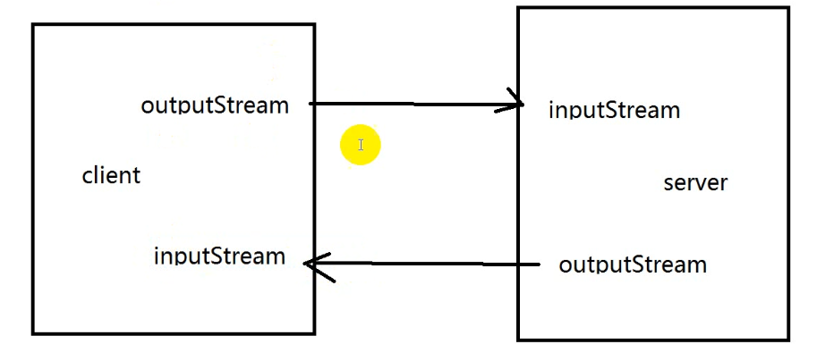
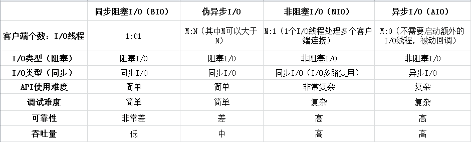
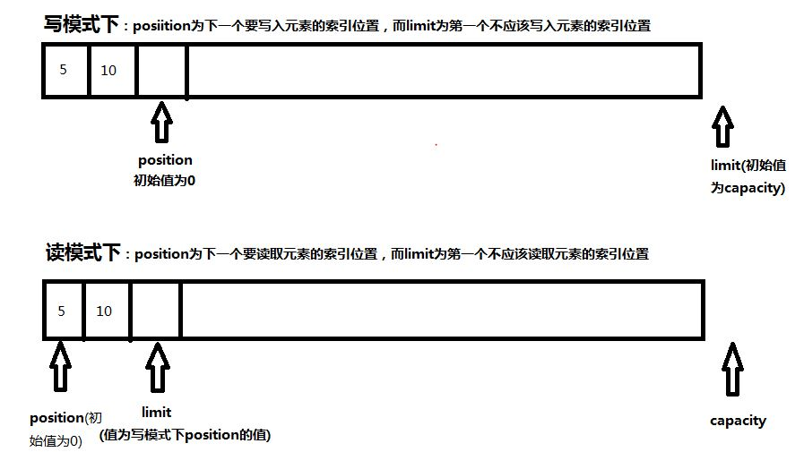

IO的概念：
输入 Input
输出 Output
IO 的分类：
File IO / 磁盘 IO File
网络 IO
网络编程模型
1、总共有几种？
同步阻塞 (BIO)
同步非阻塞
异步阻塞
异步非阻塞
提出了两对非常重要的概念：
1、同步 和 异步
2、阻塞 和 非阻塞
关于同步异步阻塞非阻塞这些 概念可见马中华笔记:
2、ServerSocket Socket 属于哪一种？
属于同步阻塞
学JavaSE的时候以前写过ServerSocket Socket 也就是 C/S软件架构模式的网络编程, 也就是server/client。这是第一种网络编程模型,最原始的网络编程模型(BIO)。
Server/Client : server： 服务器程序 client： 给用户使用
1、首先启动服务
2、启动客户端
3、客户端发送请求给服务端
4、服务端进行处理之后响应结果数据给客户端
以前写的ServerSocket Socket的代码，都是直接在main方法中启动的。
client和server要启动在不同的节点中(不同的)。其中client就是一个JVM进程 server也是一个JVM进程
B/S 架构 C/S架构
B/S 架构就是 server browser
B/S 其实 就是 C/S 中的一种特例。B都是浏览器： 封装HTTP请求发送给HTTP服务器解析，得到结果之后。由浏览器进行渲染
-----------------------------------------------------------------------------------------------------------------
举个具体的例子：
现在有一个服务： DateTimeUitl.getNowDate() ,部署在hadoop02机器上。
那么现在有一个客户，这个客户端想调用hadoop02的这个服务得到服务器的当前时间
但是，这个客户的客户端不在hadoop02上。比如说在hadoop03上。如果做到调用？
图示意如下:
首先考虑用BIO, 也就是我们在"day20-网络编程"里使用的那种编程模型, 来解决上述问题。BIO的执行流程如下:

具体实现如下: (详情见 JavaSE网课代码\src\io1803\bio)
Server端代码如下:
_files/Image [1].png)
客户端代码如下:
_files/Image [2].png)
还有一个负责关闭各种流的工具类CloseUtil:
_files/Image [3].png)
来说说BIO这种编程模型的缺点:
TaskThread每次接收到客户端的一个请求的时候，就初始化一个新的线程来执行这个请求
这样做会有两个问题:
1、如果客户单的请求数据，过了很长时间都没有发送过来，那么这个线程就会一直运行着，但是又不做任何事只是等待客户端发送数据过来。
2、既然每一个请求都初始化一个线程进行服务，那么并发量如果很大呢？也就是说客户端如果很多呢?这样也是会出现问题的,毕竟服务器的资源是有限的，不能无限制的去接收客户端的请求
BIO 编程模型中有三个致命问题：
1、ServerSocket.accept()方法是阻塞的,在等待的过程中不能做任何事。
2、BufferedReader.readLine()方法(底层是read()方法)也是阻塞的,在等待的过程中不能做任何事。其实不止于read()方法, 一个线程调用read()或write()方法时，该线程都会被阻塞，直到有一些数据被读取或写入。
3、一对一的服务模式(即一个线程只服务于一个客户端)
总结这三条的致命的问题的根本就是：
1、IO的阻塞问题
2、线程的高并发过载问题
BIO这种网络编程模型的程序 到底有没有用处？
有。使用BIO这种网络编程模型的场景如下:
1、最原始的软件的网络编程模型都是这种。
2、如果这种服务端程序能接收到的并发量在可控范围内，那就没问题。
------------------------------------------------------------------------------------------------------
早期的BIO编程模型不适用与高并发场景。所以 提出了新的编程模型
所以就有了 阻塞 非阻塞 同步 异步的概念区分
多线程的同步： 针对临界数据进行同步访问(当然读在java中不同步,主要是写要求同步)。让这一份数据，同时只能被一个线程修改。而IO中的同步与这个概念有些差别,就不再是指访问某个资源了。
java 1.0 : BIO : 同步阻塞
java 1.4 : NIO ： 异步非阻塞(并不是完全意义的异步非阻塞,但NIO也能实现异步非阻塞)
java 1.7 : AIO ： 异步非阻塞(完全意义上的异步非阻塞)
假如在食堂窗口点了一份盖浇饭:
（一）同步+阻塞 ： 自己去取饭，并且在等待的过程中, 什么都不做,干等。
（二）同步+非阻塞 ： 自己去取饭， 等的过程中，可以做其他的,比如玩游戏。
（三）异步+阻塞 ： 别人送来做好的饭,不做什么，干等 。(可以发现异步阻塞对于底层设计来说是没有任何意义的, 完全在浪费资源)
（四）异步+非阻塞 ： 别人送来做好的饭，等的过程中，还可以做其他的,比如玩游戏(效率最高)。
同步就是自己去取, 异步就是别人送过来(被动等待通知)。
阻塞就是等待的过程中什么也不做, 非阻塞就是等待的过程中干别的事。
同步、异步是指结果以什么样的方式返回
同步：主动去拉取数据。每次去拉取结果数据的时候，不一定结果数据都已经准备好了。所以, 同步里面一般都有一种轮询机制, 即每隔一段时间去询问一次, 直到结果数据全都准备好了才能拿到数据。
异步：被动等待通知
阻塞、非阻塞就是执行这个任务的线程是否该任务暂停时还可以执行其他的任务。
阻塞: 不可以
非阻塞: 可以

同步阻塞(BIO)的服务模式中, 线程是一对一的服务模式, 而伪异步I/O则由一对一的服务模式就变成了m对n的服务模式(m 是客户端个数, n 是线程数, m 可以大于 n)。
伪异步I/O其实就是在服务端使用一个线程池, 在线程池里始终保持几个线程, 不用每次有客户端来访问时再临时创建线程, 在高并发时再将线程数量加大。
好处是保证了服务器的资源不会被全部消耗, 也就是不会在高并发的时候使服务器崩溃。并且m对n的服务模式一定会比一对一的服务模式的效率要高。并且有多个线程在待命, 当有新客户端连接时, 不用重复的初始化。
坏处是并发量依然很大的话, 服务器依然会处理不过来。并且在线程处理客户端请求时, 依然是同步阻塞的,所以一个线程还是不能同时处理多个客户端的请求,只能等一个客户端处理完了,关闭流了, 再处理另一个客户端。
----------------------------------------------------------------------------------------------------
下面是根据上面的BIO的代码生成的伪异步I/O的代码:
首先是新建一个线程池类:
_files/Image [4].png)
接下来修改BIOServer的代码, 其实就修改了下面红框中几行代码而已
_files/Image [5].png)
----------------------------------------------------------------------------------------------------------
NIO
可见马中华博客:
BIO 叫做BlockingIO。NIO叫做 New IO(官网叫法) 或者 Non-Block IO
NIO ： 既叫做异步非阻塞IO, 也叫多路复用的编程模型。 NIO对于数据传输的抽象变了
NIO的概念概念： 基于通道，面向缓冲区
NIO的三大核心概念：
1、Channel (通道)
Channel 是传输数据的一种新的抽象。NIO不再使用 InputStream和outputStream, 而是使用Channel代替, Channel完完全全实现了 InputStream + OutputStream两者的功能。Channel既有输入的功能, 也有输出的功能。所以Channel就相当于双向流通的管道, 数据的输入输出都是通过它。既有客户端使用的SocketChannel, 也有服务端使用的ServerSocketChannel。
2、Buffer(缓冲区)。 Channel相当于管子, Buffer相当于池子。Channel始终是对接Buffer来使用的, 要么是数据通过Channel流入Buffer, 要么是将Buffer里的数据通过Channel流出去。Buffer就是为了给Channel读写数据提供便利。因为一个Channel会和一个Buffer绑定。
3、Selector (选择器或多路复用器)。在NIO里, 服务器的线程就相当于老板, selector就相当于秘书(管家), 客户端就相当于客户, 老板现在应该见哪个客户全都要问秘书, 听秘书安排。Selector实际上就是一个线程, 只不过这个线程里包含了一个容器,这个容器里面放的都是客户端或者服务端的连接请求。selector会检查这些连接请求的输入数据是否准备好了(不论是客户端的channel准备好了数据发送给服务端, 还是服务端的channel准备好了数据发送给客户端), 准备好了就交给线程们去处理, 没准备好就先不交给线程处理。NIO里面只有一个常驻线程, 就是这个管家。
IO 和 NIO 的比较：
1、IO是面向流的，NIO是(基于通道)面向缓冲区的：IO将数据直接写出到流中或从流中直接读取数据，NIO中所有的数据必须通过缓冲区来处理。
2、IO以流(逐字节)的方式处理数据，NIO以块的方式处理数据。
3、IO是阻塞的，NIO是非阻塞的。
伪异步I/O的线程池 ： m : n 。 m 是客户端个数, n 是线程数
NIO的线程池 : m : n +1。m是客户端个数, n 是线程数。线程数是 1个常驻线程 + 1个线程池里的所有线程
NIO的效率比伪异步I/O(或者BIO)的效率要高得多, 最重要的原因是: 阻塞 变成了 非阻塞
-------------------------------------------------------------------------------------------------------------
NIO的核心 ------缓冲区：java.nio.Buffer
1、缓冲区从两个方面来提高I/O的效率：
1、减少实际的物理读写次数
2、缓冲区所占的内存空间一直在被复用，减少了动态分配内存及GC的次数。
2、缓冲区是一个数组，java.nio.ByteBuffer是最常见的缓冲区。
ByteBuffer提供了两个创建字节缓冲区的方法：
allocate(int capacity)：将缓冲区建立在JVM的内存中。
allocateDirect(int capacity)：将缓冲区建立在物理内存中(不在jvm中)，创建的缓冲区称为直接缓冲区，可以进一步提高I/O的速度。
Buffer，顾名思义，缓冲区，实际上是一个容器，是一个连续数组。
ByteBuffer aa= ByteBuffer.allocate(1024);
那么aa的底层就是一个byte数组
IntBuffer bb = IntBuffer.allocate(1024);
那么bb的底层也是一个数组，是一个长度为1024的int数组
Buffer:
1、Buffer中的四大属性
// Invariants: mark <= position <= limit <= capacity
private int mark = -1; (默认值-1,表示没有标记)
private int position = 0;
private int limit;
private int capacity;
_files/Image [6].png)
2、8个方法
remaining() : 返回 limit - position
capacity(): 返回capacity
clear(): 清空Buffer, 准备进入写模式(position置为0, limit置为capacity)
mark(): 标记一个位置, 令标记mark = position。(一般用在读模式切换到写模式时)
reset(): 令position = mark(一般用在写模式刚切换回读模式时)
flip() 写模式转换为读模式。 (limit = position; position = 0; mark = -1;)。flip() 方法默认没读完的数据就不要了。
rewind(): 将position重置为0，一般用于重复读。(position = 0; mark = -1;)
compact(): 紧凑。在写模式下, 把未读数据全部挪到ByteBuffer数组的最前端,腾出后面连续的区域来写数据, 新写入的数据将放到缓冲区未读数据的后面。(compact()在Buffer里没有, 是ByteBuffer的抽象方法, 有效的实现在HeapByteBuffer里才有)
3、详解如下:
Buffer有两种模式:读模式、写模式。默认情况下是写模式。
capacity: 不会改变。就代表当前这个buffer的容量。
position和limit之间的区域代表的是可读可写的区域。在写模式下是可写区域, 在读模式下是可读区域。
position: 在写模式下是可写区域的起始位置(也就是开始写的起始位置)。在读模式下是可读区域的起始位置(也就是开始读的起始位置)。position始终代表可以开始读(或开始写)的位置。
limit: 在写模式下是可以写的区域的结束位置。在读模式下是可读区域的结束位置。
mark: mark就是个标记, 用来在切换模式前(一般都是读模式切换到写模式)记录position读到了哪个位置(即令mark = position), 以便于由写模式恢复到读模式时, 就可以令position = mark, 就可以恢复到上次读到的位置。
(1)在写模式下, 写了一部分数据, 没有写到limit, 这时如果中止写, 切换到读模式, 则会令 limit = position , position = mark(并不是每次都是0)。
(2)在读模式下, 读到一定位置, 数据没有全部读完: 如果没读完的数据还要, 则会令 mark = position, position = limit, limit = capacity; 如果没读完的数据不要了, 则令position = 0, limit = capacity。
然后一直重复以上(1)和(2)步骤。
_files/Image [7].png)

--------------------------------------------------------------------------------------------------------------
2、通道：Channel
Channel是一个通道，可以通过它读取和写入数据，它就像自来水管一样，网络数据通过Channel读取和写入。通道与流的不同之处在于通道是双向的，流只是在一个方向上移动（一个流必须是InputStream或者OutputStream的子类），而且通道可以用于读、写或者同时读写。因为Channel是全双工的，所以它可以比流更好地映射底层操作系统的API。
Channel 用于向 buffer 提供数据或者读取 buffer 数据，buffer 对象的唯一接口。
常用的Channel ：
FileChannel ：实现从文件读，或者向文件写
SocketChanel ：通过TCP协议向网络的两端读写数据。(客户端常用)
ServerSocketChannel ：监听客户端发起的TCP链接，如果有链接请求，则为每个TCP连接创建一个新的SocketChannel来进行数据读写。(服务端常用)
DatagramChannel ：通过UDP协议向网络的两端读写数据
-------------------------------------------------------------------------------------------------------
3、多路复用器Selector
多路复用器Selector是Java NIO编程的基础，熟练地掌握Selector对于掌握NIO编程至关重要。多路复用器提供选择已经就绪的任务的能力。简单来讲，Selector会不断地轮询注册在其上的Channel，如果某个Channel上面有新的TCP连接接入、读和写事件，这个Channel就处于就绪状态，会被Selector轮询出来，然后通过SelectionKey可以获取就绪Channel的集合，进行后续的I/O操作。
一个多路复用器Selector可以同时轮询多个Channel，由于JDK使用了epoll()代替传统的select实现，所以它并没有最大连接句柄1024/2048的限制。这也就意味着只需要一个线程负责Selector的轮询，就可以接入成千上万的客户端，这确实是个非常巨大的进步。
Selector在代码中的核心逻辑:
Selector s = Selector.open(); //用open()方法得到一个Selector选择器
while(true){
//下面这句相当于serversocket.accept()。只不过select()是轮询的方法, 不阻
//塞。参数1000表示每隔1秒轮询一次。
s.select(1000);
//下面的keys就是所有"准备好了输入数据的客户端"的集合
SelectionKey keys = s.selectedKeys();
}
基于反应堆是什么意思？反应堆其实就是指选择器Selector, 如下面这句代码:
channel.register(s, SelectionKey.OP_READ) ;
channel是客户端或者服务端, s 是选择器(或者叫秘书、管家)
如果channel已经准备好了数据(不论是客户端的channel准备好了数据发送给服务端, 还是服务端的channel准备好了数据发送给客户端),就可以将当前channel注册到s这个反应堆中去, 并指出自己接下来的操作类型(即SelectionKey的种类,即要进行的事件), SelectionKey就是可选择的键(事件), 也就是对应的channel要操作的模式,有四种类型：
OP_READ (读)
OP_WRITE (写)
OP_CONNECT (连接)
OP_ACCEPT (接收)
而上面的语句: SelectionKey keys = s.selectedKeys(); 就是取出来一堆已经注册的channel的事件的集合, 当调用到某个channel的key时(即使用key.channel()方法), 就是该注册好的channel的事件真正被使用(执行)的时候。
将上面的核心逻辑代码调整为如下, 即是使用了反应堆(基于反应堆其实就是一种托管模式, 将操作托管给第三方作为一个中间人, 不用自己什么事都管, 都交给中间人来协调):
channel.register(s, SelectionKey.OP_READ);
Selector s = Selector.open(); //用open()方法得到一个Selector选择器
while(true){
//下面这句相当于serversocket.accept()。只不过select()是轮询的方法, 不阻
//塞。参数1000表示每隔1秒轮询一次。
s.select(1000);
//下面的keys就是所有"准备好了输入数据的客户端"的集合
SelectionKey keys = s.selectedKeys();
key.channel();
}